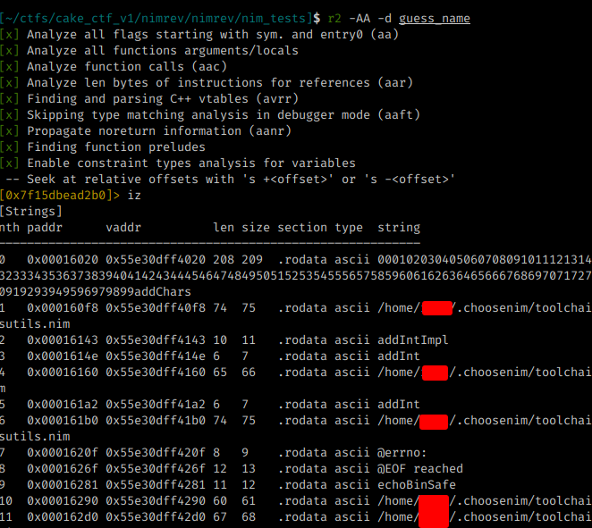

opcod3r's blog
Infosec/Dev/CC Things
This write up explains how i solved the challenge proposed by CakeCTF2022. The challenge was to get the flag in a binary made with the Nim (https://nim-lang.org/) program language.
tl;dr
If you want to know the answer right away, just put a break point in the sym.join_main_42 function, and check the registers and your flag will be there.
The challenge itself was not complex however, I had never written anything in Nim. So right after downloading the challenge binary, I went to look at some of Nim’s documentation and created a simple example, a guess number:
import strutils
echo "Whats the number: "
let guess = parseInt(stdin.readline)
let number = 1337
if guess < number:
echo "guess to low"
elif guess > number:
echo "guess to high"
else:
echo "WoW!"
The Nim language at Syntax level looks like Python but you can generate a binary in C. And with the same code you generate JavaScript, very cool.
Looking at the code made by me, and put on Radare, I could see a few things:
1 - Hard coded strings have the @ in front; 2 - There is a main, and a NimMain functions 3 - Other functions named Nim
4 - NimMainInner sometime is Key to find the application logic.
The following images illustrate how my code generated, inside Radare and the strings that are in my code like Whats the number:
The command r2 -AA -d will Analyze the binary and debug
The command iz will dump all strings



The next step is to put a breakpoint in main and check what it is calling:
The command db (function name) will set a break point radare2
The command dc will run the program
The command pdf will print the “disassemble” of main funcion

As can be seen in the previous image, the main function calls another function named sym.NimMain.
When analyzing what has in sym.NimMan, I could see that the calls usually go through an instruction and call the sym.NimMainInner function, and after that call the sym.NimMainModule


The next step was essential to solve the CTF, I realized that all Nim function calls are inside the sym.NimMainInner call. So the functions I used in my example are called here:

Solving the nimrev Challenger
When downloading the binary and running it straight away, we noticed that the sym.readLine function is called, as it waits for user input, as I did in the example. However the string Wrong.. is displayed. And we know that to search for these strings we need the char @:


We know that, we have to look for the sym.NimMainModule to check the functions used and thus try to understand some of the logic.


Looking at the output of the sym.NimMainInner call, we notice that after reading our input with sym.readLine several other functions are called and after calling the newSeq function (https://nim-lang.org/docs/system.html#newSeq)
several mov byte operations are performed and a function called eqStrings is called before executing the function which will show Wrong or Correct ( echoBinSafe )

But before calling the string comparison, a function is called first ( sym.join_main_42 ) and is probably responsible for the check, let’s check.


When analyzing each function present:
sym.resizeString sym.appendString_2 sym.nimCharToStr
When analyzing the nimCharToStr function it is possible to observe that a “new” string is dynamically created, for comparison with our input, before calling the eqStrings function. Therefore, we must check the values of the registers before the comparison and so we get our flag ;)


The drr command shows all the registers em try to “long to bytes” for you ;)
To check the veracity of the flag, we run the binary again and pass the flag

That’s it for today, Nim is a very cool language and I learned a lot from this challenge. It’s basic but maybe someone hasn’t done it using radare and this can be a mini guide for those who want to understand more about Radare ( https://rada.re /n/ ) and the Nim Language ( https://nim-lang.org/ ).
Thanks O/